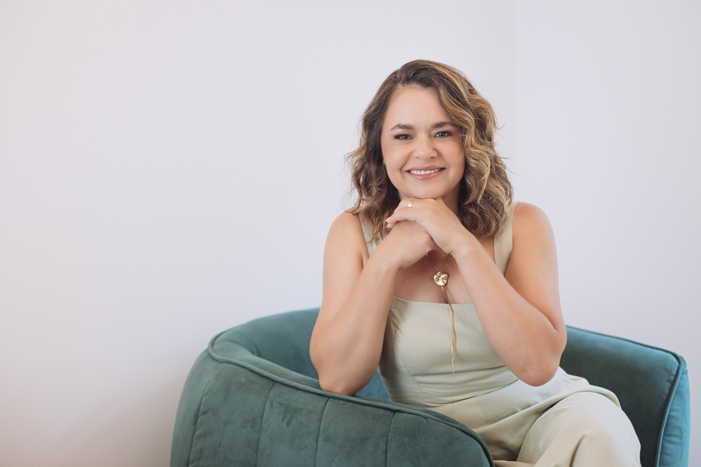
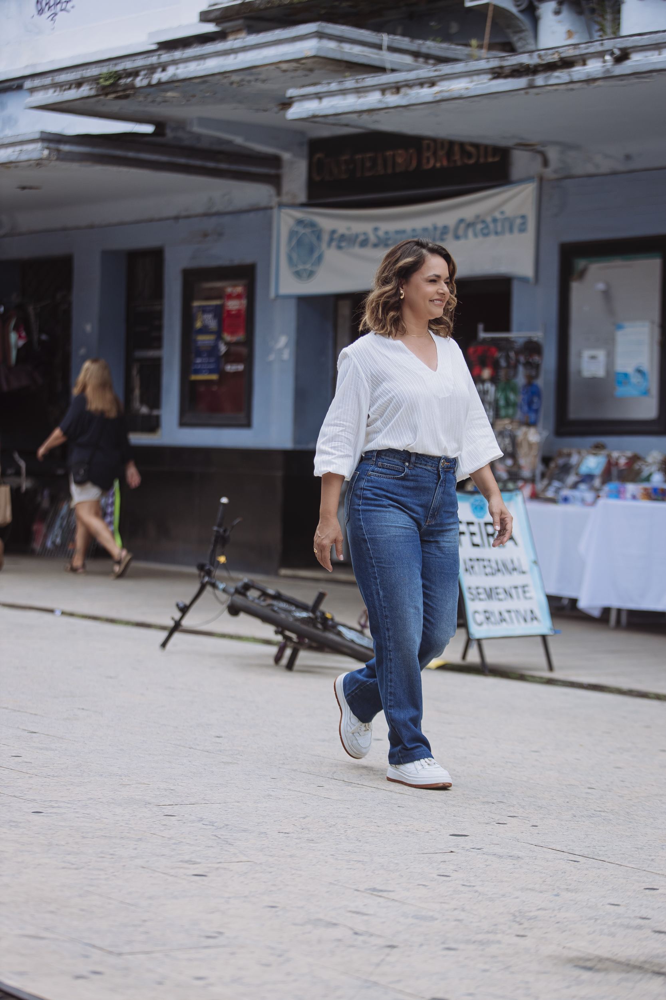
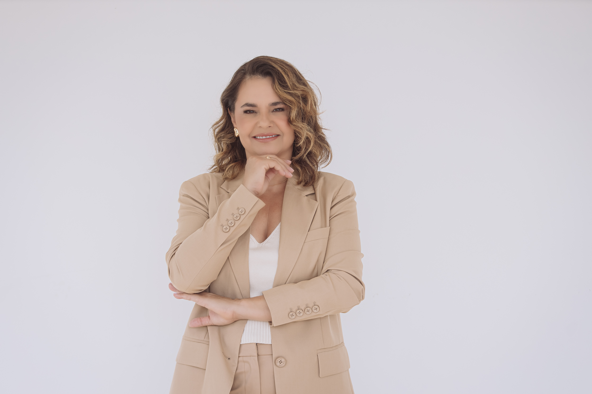
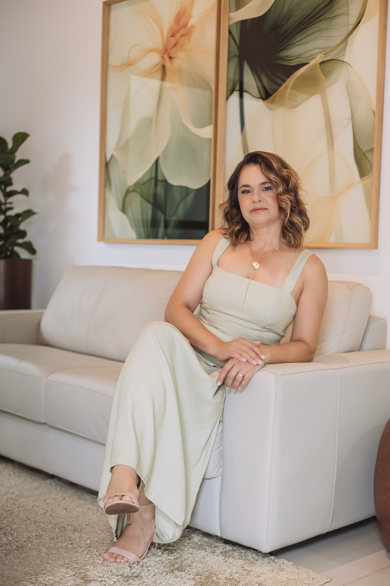

Está cansado é de se esforçar tanto e não ver resultado. De violência crescente, de educação e saúde de qualidade não serem para todos, e do salário de quem trabalha honestamente valer cada vez menos. Eu também me cansei de tudo isso.

Fanny MeloNão entrei na política para fazer parte do sistema. Entrei porque, depois de 23 anos vendo de perto a dor de quem mais precisa de Justiça, entendi que dava para fazer mais — e que era a minha vez de fazer.
Sou filha de pequenos produtores rurais. Sei que vencer na vida dependeu de estudo, trabalho e esforço — não de sorte, nem de sobrenome. Sou casada, mãe de dois filhos e de duas filhas de coração. Há 23 anos, como servidora do Ministério Público mineiro, dedico minha vida a defender mulheres, crianças, adolescentes, pessoas com deficiência, idosos e quem mais precisar de Justiça.
Quero ser, em Brasília, a voz de quem acorda cedo, trabalha duro, sonha com um futuro melhor e se recusa a perder a esperança.
Filha de pequenos produtores rurais, do interior de Minas Gerais.
23 anos como servidora do Ministério Público de Minas Gerais.
Casada, mãe de dois filhos e de duas filhas de coração.
Ser em Brasília a voz de quem trabalha duro e não perde a esperança.
É hora de trocarmos promessas por coragem. E os políticos de sempre, por gente de verdade.— Fanny Melo


